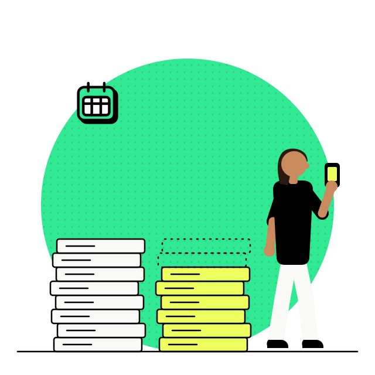
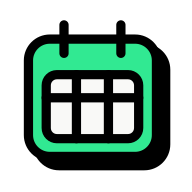

- Inpulse
- Ideação e experimentação
- Graduação em medicina
Solução que ajudou a diminuir a recuperação dos alunos
Uma prova de medicina vira cinco notas separadas e cinco recuperações independentes. Não existia lugar nenhum onde o aluno visse isso junto antes de já estar em recuperação.
Ficha do projeto
- Duração
- 10 meses, do primeiro experimento ao primeiro semestre completo de uso
- Jeff
- Idealizador, mentor, designer UX e UI
- Time
- Pedro Anjos, designer UI, com a área acadêmica na cocriação
A média de recuperação por aluno, comparando o semestre anterior ao lançamento com o primeiro semestre completo de uso, numa base de 420 alunos. O app não ensina conteúdo. O efeito veio de o aluno enxergar cedo qual eixo estava abaixo da média.

01 · Contexto
Por limitação técnica, a instituição não conseguia entregar ao aluno um boletim, um calendário acadêmico e uma comunicação que funcionasse.
Antes do Inpulse, o aluno corria atrás da informação em grupo de WhatsApp ou indo até a coordenação, e anotava as próprias notas em algum lugar para conseguir ter uma visão geral do estudo. Cada avaliação da graduação gera cerca de cinco notas separadas, e ele fica de recuperação em cada nota abaixo da média de forma independente. Uma prova só vira vários eixos de estudo espalhados.
02 · O aluno
O que o aluno dizia
Antes
“Precisamos correr atrás de nota, elas levam dias para sair, e quando saem a gente tem que anotar pra ver todas em um mesmo lugar. Difícil se preparar dessa maneira.”
 Depois
Depois
“Com o Inpulse eu não preciso ficar anotando as notas dos complexos temáticos, e isso facilitou pra eu achar o que devo estudar para as recuperações.”
03 · Descoberta
Qual a melhor maneira de entregar um boletim que o aluno use
Depois de analisar o NPS, as pesquisas que o time já tinha feito e um dia na vida conduzido por um dos designers, ficou claro que esse aluno está sempre em movimento e precisava de algo de fácil acesso, que estivesse com ele o tempo todo.
O curso é integral e exige muito. Devolver tempo para o que importa, o estudo e o descanso, era o critério que separava uma boa solução de uma solução bonita.
Depois de várias sessões de cocriação com a área acadêmica e com todo o time de produto e desenvolvimento, saímos com um protótipo navegável de alta fidelidade, pronto para validação.
04 · Experimento
Qual funcionalidade o aluno quer primeiro
Estruturamos um experimento para medir a desejabilidade de cada funcionalidade, e assim priorizar o que já sabíamos ser dor do aluno e da empresa.
Usamos a estrutura de um teste de usabilidade, com tarefas oferecidas aos participantes, mas não para medir facilidade. Era para registrar a reação espontânea a cada funcionalidade.
- Entusiasta
- Demonstra interesse de maneira espontânea.
- Receptivo
- Demonstra interesse a partir de uma interação ou pergunta do facilitador.
- Indiferente
- Verbaliza a falta de interesse, ou ignora que a funcionalidade existe.
Próximas avaliações
8 receptivos · 2 indiferentes
Faltas
10 receptivos
Situação atual
1 entusiasta · 9 receptivos
Últimas avaliações
1 entusiasta · 8 receptivos · 1 indiferente
Calendário
3 entusiastas · 7 receptivos
Planejar estudos
1 entusiasta · 8 receptivos · 1 indiferente
O calendário doía mais que o boletim.
De 10 funcionalidades testadas, 4 tiveram entusiasta espontâneo, e o boletim completo, que era a aposta inicial do time, ficou atrás delas.
Quatro funcionalidades saíram da primeira versão, e no lugar delas priorizamos o acompanhamento por complexo temático, que era o mais caro de construir. Era também o único que respondia à recuperação fragmentada, que é a dor que o caso inteiro persegue.
05 · Resultado
Agora o aluno tem mais tempo para estudar
O aluno passou a ter acesso rápido e real à informação de aula, com as notas centralizadas num lugar só.
A primeira versão já mostrou números de engajamento altos no primeiro semestre de lançamento.

dos alunos acessando o app

acessando ao menos uma vez por dia
de CSAT na primeira versão
de recuperação por semestre por aluno
Desejo do usuário e aposta do time raramente são a mesma coisa.
O experimento não serviu para confirmar o que a gente queria construir. Serviu para mudar a ordem. O que doía mais entrou antes, mesmo sendo o mais caro.
Quer conversar sobre produto em educação, ou sobre como medir desejo antes de construir? Me chama no WhatsApp ou veja o próximo caso.
Próximo caso, Mapa de experiência